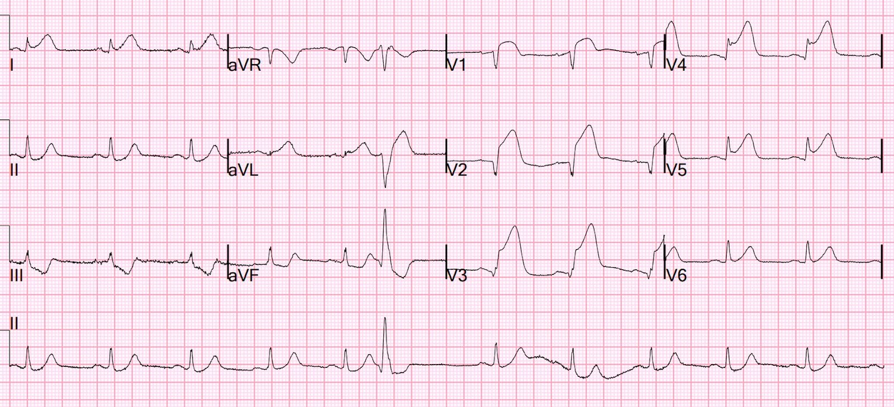
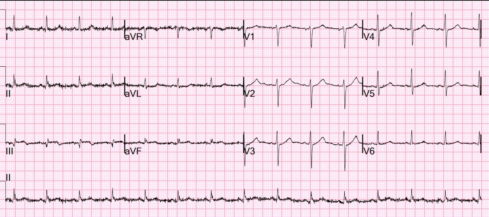
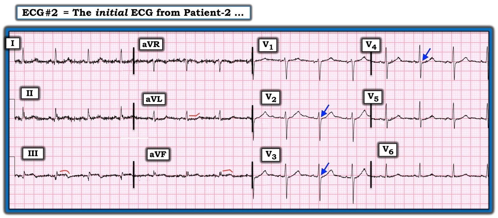

26/09/2023 — Bệnh nhân nào đau ngực dữ dội hơn?
Bản dịch tiếng Việt của bài "Which patient has the more severe chest pain?" – Dr. Smith’s ECG Blog. Giữ nguyên toàn bộ 4 hình ảnh của bản gốc.
2 người đàn ông trung niên đến khám vì đau ngực.
Ai đau ngực dữ dội hơn vào thời điểm ghi điện tâm đồ?
Đây là điện tâm đồ của bệnh nhân 1, ghi khoảng 2 giờ sau khi khởi phát đau:


STEMI/OMI trước bên diện rộng
Troponin I đỉnh trên 60.000 ng/L
Đây là điện tâm đồ của bệnh nhân 2, ghi khoảng 2 giờ sau khi khởi phát đau:


Đây là OMI, nhưng không phải STEMI
Troponin I đỉnh 440 ng/L
Bệnh nhân 1 ở trên, với ST chênh lên diện rộng, than đau ngực mức 5/10 vào thời điểm ghi điện tâm đồ.
Bệnh nhân 2 ở dưới, với một OMI rất kín đáo, than đau ngực mức 10/10 vào thời điểm ghi điện tâm đồ.
Vấn đề là thế này: Mức độ đau của bệnh nhân ít tương quan với ST chênh lên, kích thước ổ nhồi máu hay mức độ nặng của tổn thương bệnh lý (xem tài liệu tham khảo 1 bên dưới). Tuy nhiên, mức độ đau có liên quan với can thiệp nhanh, vì bệnh nhân đau dữ dội tìm đến chăm sóc y tế sớm hơn và nhân viên y tế chú ý tới họ nhiều hơn (xem tài liệu tham khảo 2 bên dưới).
Xem 2 bài báo này
Association between pre-hospital chest pain severity and myocardial injury in ST elevation myocardial infarction: A post-hoc analysis of the AVOID study (Mối liên quan giữa mức độ đau ngực trước viện và tổn thương cơ tim trong nhồi máu cơ tim ST chênh lên: phân tích hậu kiểm (post-hoc) nghiên cứu AVOID)
Liên kết tác giả mở bảng thông tin phủ (overlay panel)
https://www.sciencedirect.com/science/article/pii/S2352906721001871 (bài báo trên ScienceDirect)
Bối cảnh
Chúng tôi tìm cách xác định liệu có tồn tại mối liên quan giữa mức độ đau ngực trước viện và các dấu ấn tổn thương cơ tim hay không.
Phương pháp và Kết quả
Các bệnh nhân được xác nhận nhồi máu cơ tim ST chênh lên (STEMI) được đội cấp cứu ngoài viện điều trị đã được đưa vào phân tích đoàn hệ hồi cứu này của nghiên cứu AVOID. Tiêu chí chính là mối liên quan giữa mức độ đau ngực ban đầu trước viện với các dấu ấn sinh học tim và kích thước ổ nhồi máu dựa trên cộng hưởng từ tim. Các nhóm được phân loại theo đau ngực từ trung bình đến nặng (thang điểm số đánh giá đau ≥ 5/10) hoặc dưới mức trung bình để so sánh kết cục thủ thuật và kết cục lâm sàng. 414 bệnh nhân được đưa vào phân tích. Có tương quan yếu giữa mức độ đau ngực ban đầu trước viện với creatine kinase đỉnh (r = 0,16, p = 0,001) và troponin I tim đỉnh (r = 0,14, p = 0,005). Cả hai đều không còn ý nghĩa thống kê sau khi hiệu chỉnh theo các yếu tố gây nhiễu đã biết. Không có mối liên quan giữa đau ngực từ trung bình đến nặng lúc nhập viện với biến cố tim mạch bất lợi chính sau 6 tháng (20% so với 14%, p=0,12). Có tương quan yếu giữa đau ngực với tiền sử bệnh tim thiếu máu cục bộ (r = 0,16, p = 0,001), can thiệp mạch vành qua da (r = 0,16, p = 0,001), động mạch liên thất trước là mạch thủ phạm (r = 0,12, p = 0,012), và tương quan nghịch yếu giữa tuổi (r = -0,14, p = 0,039) với đau ngực.
Kết luận
Chỉ ghi nhận được mối liên quan yếu giữa mức độ đau ngực trước viện và các dấu ấn tổn thương cơ tim, ủng hộ việc dùng thuốc giảm đau nhóm opioid thận trọng hơn, tập trung vào sự dễ chịu của bệnh nhân.
___________
Bài báo này cho thấy cường độ đau có liên quan với thời gian từ cửa đến bóng (door-to-balloon) ngắn hơn và do đó ổ nhồi máu nhỏ hơn.
Đau dữ dội khiến người ta đến khoa cấp cứu (ED) để được điều trị nhanh hơn! Đau khủng khiếp hóa ra lại là điều tốt!
Chest Pain Severity Rating Is a Poor Predictive Tool in the Diagnosis of ST-Segment Elevation Myocardial Infarction (Đánh giá mức độ đau ngực là công cụ tiên đoán kém trong chẩn đoán nhồi máu cơ tim ST chênh lên)
https://pubmed.ncbi.nlm.nih.gov/32947377/ (tóm tắt bài báo trên PubMed)
Tóm tắt
Các hướng dẫn hiện hành về nhồi máu cơ tim ST chênh lên (STEMI) đòi hỏi đoạn ST chênh lên kéo dài trên điện tâm đồ, thay đổi men tim và triệu chứng thiếu máu cục bộ cơ tim. Đau ngực là triệu chứng quyết định, thường được đo bằng thang điểm 11 mức (0-10). Đau ngực càng dữ dội được cho là đi kèm khả năng cao hơn chẩn đoán STEMI là dương tính thật. Nghiên cứu đoàn hệ quan sát hồi cứu này xem xét các bệnh nhân STEMI liên tiếp từ ngày 02 tháng Năm năm 2009 đến ngày 31 tháng Mười Hai năm 2018. Phân tích các chỉ số STEMI chuẩn gồm thời gian từ điện tâm đồ dương tính đến thiết bị (can thiệp) và từ lần tiếp xúc y tế đầu tiên đến thiết bị, sự hiện diện của bệnh đồng mắc, chẩn đoán dương tính giả, tử vong 30 ngày và 1 năm, và tái nhập viện trong 30 ngày. Mức độ đau ngực được đánh giá khi nhập bệnh viện thực hiện can thiệp mạch vành qua da tiên phát. Chúng tôi phân tích 1409 lần kích hoạt STEMI (69% nam, 66,3 tuổi ± 13,7 năm). Trong số này, 251 (17,8%) không có tổn thương tắc nghẽn, phù hợp với STEMI dương tính giả. Bốn trăm sáu mươi sáu (33,1%) báo mức đau ngực bằng 0 khi nhập viện, 378 (26,8%) báo đau nhẹ (1-3), 300 (21,3%) đau vừa (4-6), và 265 (18,8%) đau nặng (7-10). Bệnh nhân đến viện không có đau ngực có tỷ lệ chẩn đoán STEMI dương tính giả cao hơn có ý nghĩa. Mức độ đau ngực tăng dần đi kèm với thời gian từ lần tiếp xúc y tế đầu tiên đến thiết bị ngắn hơn, và tử vong nội viện, 30 ngày và 1 năm thấp hơn. Mức độ đau ngực khi nhập viện không tương quan với khả năng chẩn đoán STEMI là dương tính thật, dù nó đi kèm với tiên lượng bệnh nhân tốt hơn, thể hiện qua kết cục cải thiện và thời gian đến tái tưới máu ngắn hơn.

===================================
BÌNH LUẬN CỦA TÔI, bởi KEN GRAUER, MD (26/9/2023):
===================================
Bài đăng hôm nay của Dr. Smith nhấn mạnh một điểm lâm sàng rất quan trọng: “Mức độ đau ngực của bệnh nhân ít tương quan với mức độ ST chênh lên, kích thước ổ nhồi máu hay mức độ nặng của tổn thương bệnh lý.”
- Tuy vậy, đau ngực dữ dội hơn thường mang lại một lợi thế không ngờ — cụ thể là, nhân viên y tế cấp cứu có xu hướng chú ý nhiều hơn tới bệnh nhân đau ngực dữ dội — điều mà (theo Dr. Smith) — đã giúp thông tim nhanh hơn, nhờ đó cứu vớt được nhiều cơ tim hơn, với triển vọng tiên lượng lâu dài tốt hơn.
Bệnh nhân thứ 2 trong ca hôm nay (người có điện tâm đồ #2) — bị đau ngực dữ dội (10/10) vào thời điểm ghi điện tâm đồ ban đầu. Nhưng, ngay cả khi bệnh sử của bệnh nhân này là đau ngực nhẹ hơn nhiều — bất kỳ bệnh sử đau ngực mới nào đi kèm một điện tâm đồ ban đầu như của bệnh nhân này — đều phải nhanh chóng dẫn đến kích hoạt phòng thông tim (hoặc ít nhất — ghi lại điện tâm đồ ngay trong vòng vài phút sau điện tâm đồ ban đầu này — cộng với tìm một bản ghi cũ để so sánh — với nghi ngờ mạnh rằng sẽ rất sớm cần thông tim khẩn).
==========================
Hãy XEM LẠI điện tâm đồ ban đầu được ghi ở Bệnh nhân 2 trong ca hôm nay (mà để cho rõ — tôi đã tái hiện lại trong Hình 1).
- TẠI SAO điện tâm đồ ban đầu này lại đủ lý do để thông tim khẩn (hoặc ít nhất là theo dõi hết sức sát sao với nghi ngờ rằng sẽ rất sớm cần thông tim khẩn) — ngay cả khi đau ngực không dữ dội?


SUY NGHĨ CỦA TÔI về điện tâm đồ ban đầu của Bệnh nhân 2:
Có nhiễu đường nền rõ rệt trên điện tâm đồ #2. Do việc đánh giá điện tâm đồ chính xác là rất quan trọng ở bất kỳ bệnh nhân nào có triệu chứng mới — tôi sẽ ghi lại bản ghi ban đầu này ngay lập tức. Dù vậy:
- “Con mắt” của chúng ta phải lập tức bị thu hút bởi hình dạng QRST ở chuyển đạo III — nơi có một sóng Q lớn không tương xứng (gần như sâu bằng chiều cao của sóng R ở chuyển đạo này) — cùng với đoạn ST thẳng đuỗn + chênh lên + phần cuối sóng T đảo ngược kín đáo nhưng có thật.
- Ít nổi bật hơn nhưng vẫn hiện diện — là hình dạng tối cấp kín đáo của sóng ST-T ở chuyển đạo aVF kế cận.
- Ở một bệnh nhân có bất kỳ cơn đau ngực mới nào (ngay cả khi tương đối nhẹ) — Đoạn ST thẳng đuỗn kèm chênh xuống nhẹ ở chuyển đạo aVL phù hợp với một thay đổi soi gương, ủng hộ nghi ngờ OMI thành dưới mới xảy ra hoặc cấp tính.
- Bình thường — phải có ST chênh lên nhẹ dốc lên ở các chuyển đạo trước V2,V3. Nhưng đó không phải là điều chúng ta thấy ở các chuyển đạo trước tim có mũi tên màu XANH DƯƠNG, mà thay vào đó gợi ý ST chênh xuống nhẹ nhưng có thật, rất có thể chỉ ra OMI thành sau kèm theo.
- XIN NHẤN MẠNH: Các dấu hiệu điện tâm đồ nêu trên cực kỳ kín đáo. Nhưng xét đến “Điều cần nhớ” mà Dr. Smith nêu bật ở trên ( = mức độ triệu chứng không nhất thiết tương quan với mức độ nặng của tổn thương bệnh lý) — và, việc có đau ngực dù chỉ nhẹ ở một bệnh nhân với các dấu hiệu thấy trên điện tâm đồ #2 — thì cần theo dõi hết sức sát sao (tức là, theo dõi bằng các bản ghi liên tiếp và troponin liên tiếp + tìm một điện tâm đồ cũ của bệnh nhân) — với suy nghĩ rằng chúng ta cần chứng minh rằng thông tim khẩn là không cần thiết (chứ không phải ngược lại).